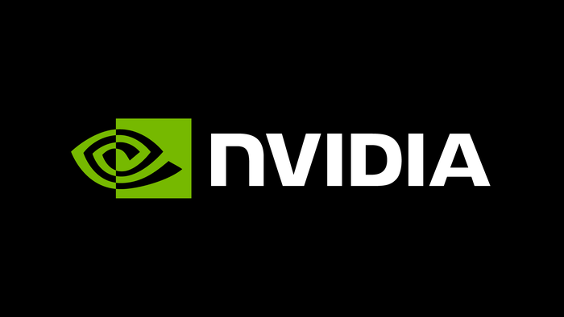

11 月 12 日，NVIDIA 董事会发出一份不到 400 字的新闻稿：黄仁勋（Jensen Huang）辞去总裁、首席执行官及董事会成员职务，即刻生效。CFO Colette Kress 出任临时 CEO，Harvey C. Jones 成为公司成立以来第一位董事会主席。从 10 月 29 日董事会启动独立调查算起，到这份公告落地，一共 14 天。当天开盘，NVDA 股价跳空下跌 14 个点。而公司对外的定调只有一个词：不间断（without interruption）。
这不是一次普通的 CEO 交接。NVIDIA 是过去五年全球 AI 资本开支的实际收款方，黄仁勋则是这条产业链上唯一一个既能对台积电谈产能、又能对超大规模云厂商谈框架、还能在 GTC 上台讲两小时的人。公告里没有任何一句解释他为什么走，这才是市场真正不安的地方。
一、14 天的收网，和 33 年的地基
要理解这份公告的重量，得把两个时间尺度放在一起看。
长的那条是 33 年。黄仁勋 1993 年参与创办 NVIDIA，把一个显卡公司做成了 AI 时代的基础设施供应商：据 Azeem Azhar 的统计，过去五年 NVIDIA 卖出近 1400 万颗旗舰 AI 芯片，占整个 AI 加速器市场约 85%；它还向一批 neocloud 新云厂商提供财务担保，仅过去一年在欧洲的投资就接近 100 亿美元。这意味着 NVIDIA 的资产负债表和整条 AI 算力供应链是绑在一起的——CEO 换人，影响面不止一家公司。
短的那条是 14 天。据《华尔街日报》与 The Verge 的报道，导火索是黄仁勋与一名被指为中国情报人员的女子的交往，随后又曝出与一名 NVIDIA 员工的第二段婚外情；董事会此前公开表态支持他，周日启动独立调查时还声明「没有理由认为公司机密泄露」。但在 10 月 29 日之后的 14 天里，调查结论、政治压力和出口管制的舆论环境同时收紧，最终结果就是这份「即刻生效」的辞任。数字中国生命卡兹克在梳理时间线时提到，这条链条要追溯到 2022 年 A100、H100 对华禁售，到 Megaspeed 采购争议、黄乐被情报机构认定涉间谍活动，一环扣一环。
二、公告里真正重要的四句话
把官方新闻稿拆开，能看出董事会这次的选择逻辑：
- 即刻生效，不留过渡期。没有「继续担任顾问」、没有「保留董事席位」，这在创始人 CEO 的离任里很少见，说明董事会要的是切断关联，而不是保留影响力。
- CFO 兼任临时 CEO。Kress 自 2013 年 9 月加入 NVIDIA 任执行副总裁兼 CFO，此前在 Cisco 和 Microsoft 做了近 25 年财务。选财务负责人而不是产品负责人，等于把过渡期的优先级定在「守住承诺和报表」，不是「开新战场」。
- 首任董事会主席。Harvey C. Jones 有 30 多年创业、科技高管和风险投资经历，曾任 Synopsys 的 CEO 与执行主席。NVIDIA 此前长期不设独立主席，这个位置本身就是为了在 CEO 空缺期提供一个治理锚点。
- 财报日程不变。Q3 FY2027 业绩仍定在 11 月 17 日美西时间下午 1:20 发布、2 点开电话会。董事会用「照常」两个字告诉客户和供应商：订单、路线图、交付节奏不动。
「Colette 帮助 NVIDIA 走过了一段非凡的增长期，对我们的业务、客户、运营和财务状况有深刻理解……董事会完全信任她和领导团队，我们预计公司的运营、客户承诺和产品路线图将继续不受影响。」
三、各方反应：从员工投票到国会信函
最先反弹的不是华尔街，是内部。据 WIRED 报道，NVIDIA 内部建议箱里一则由资深工程师在辞任前撰写的帖文获得超过 1600 条评论，多数员工支持恢复黄仁勋的前 CEO 职位，并要求董事会先公布调查结果、对员工做一次投票调查。这种公开请愿在 NVIDIA 历史上没有先例。
外部声音则明显分两派。一派认为这是一次历史级误判：Lex Fridman 称让黄仁勋离开对美国和人类都是巨大错误，堪比 Apple 1985 年解雇 Steve Jobs 但影响更大；Rohan Paul 转引时列了一串名单——Atari（1978，Nolan Bushnell）、Apple（1985，Steve Jobs）、Uber（2017，Travis Kalanick）、OpenAI（2023，Sam Altman），结论是「每隔几年，董事会就会重新认识到创始人本身就是战略」。
另一派把焦点放在监管上。SemiAnalysis 的长文认为，这次去职与美国情报界推动、针对中国远程访问 GPU 的 RASA 法案推进有关；The Verge 的 Elizabeth Lopatto 则直言第二桩婚外情只是导火索，真正原因是芯片走私指控。政治层面已经跟进：民主党众议员 Richard Neal 与参议员 Ron Wyden 就对华芯片销售启动调查，并致函商务部长 Howard Lutnick 要求保存相关记录。

四、这件事真正改变了什么
1. 创始人即接口，接口不能靠财务补
Azeem Azhar 点出了关键差异：Apple 在 1985 年让 Jobs 离开时，公司已经有一套成熟的产品线和运营体系；而 NVIDIA 没有准备好继任者，黄仁勋本人一直是 AI 生态里的关键纽带——他去谈台积电的产能、去给 neocloud 做背书、去说服欧洲政府给补贴。Kress 能守住数字，但短期内很难替一个「布道者」出场。这就是为什么公告反复强调「不间断」：市场怕的不是 CEO 空缺，是关系网断裂。
2. 出口管制才是主线剧情
把 14 天风波、RASA 法案、民主党信函放在一条线上看，逻辑很清楚：NVIDIA 的问题从来不是产品力，而是它处在中美算力管制的正中间。董事会选一位财务型临时 CEO，等于承认未来一段时间的主任务是合规与稳定交付，而不是扩张。对客户来说，短期最该盯的不是新架构，而是 11 月 17 日财报里中国区收入的表述方式。
3. 同一周，资本在给「没有创始人的 AI 公司」定价
巧合得有点刺眼：就在黄仁勋离任的同一周，Anthropic 官宣 IPO，Bloomberg 称其寻求最高 90.4 亿美元级别的募资（含私募配售）、完全稀释估值目标约 1.4 万亿美元、代码 ANT、由高盛与摩根士丹利牵头共 22 家承销行，若成行将超过 SpaceX 的 85.7 亿美元纪录成为史上最大上市；WSJ 还披露 7 位创始人各套现约 2.5 亿美元、每人仍保留约 180 亿美元持仓。资本市场正在为一批「创始人不控股、但创始人还在」的 AI 公司给出天价，而 NVIDIA 恰好要在这一刻证明：没有创始人的 AI 公司也能跑。
五、总结
33 年建起来的地基不会因为一份公告消失，但「黄仁勋 = NVIDIA」这个等式确实结束了。接下来三件事会给出答案：11 月 17 日的财报电话会上 Kress 怎么回答中国区与毛利率；董事会的永久 CEO 遴选会不会从外部找人；以及那 1600 条内部评论，会不会变成一次真正的治理改革。NVIDIA 现在要证明的，不是它还能卖多少 GPU，而是它能不能在没有创始人的情况下，继续当那条供应链的中心。
原文：NVIDIA Announces CEO Transition — NVIDIA Newsroom ｜ 另见 AI 热点条目